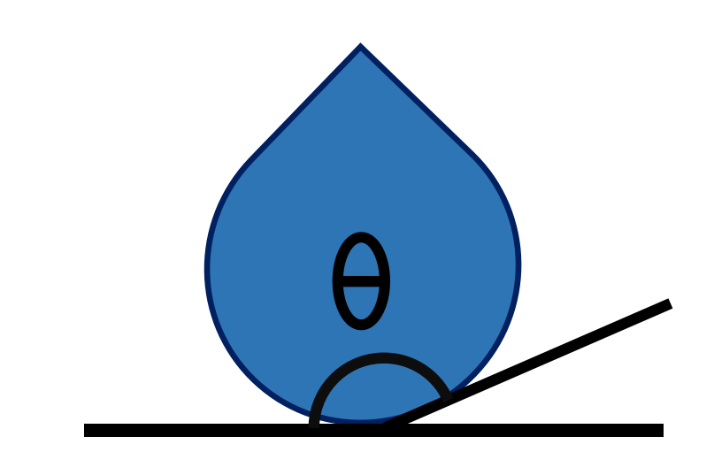

Introduction
{kind=link}
HydroAngleAnalyzer is a Python package designed to analyze the contact angle of droplets from molecular dynamics simulations. It provides a modular workflow to parse trajectories, compute contact angles using different theoretical methods, and visualize the results.
Package Overview
The package operates in three main stages: Parsing, Calculation, and Visualization.
graph LR
A[Trajectory Parser] --> B[Contact Angle Calculation]
B --> C[Visualization]
subgraph Parsing
A
end
subgraph Methods
B
end
subgraph Output
C
end
1. Trajectory Parser
The first step is to import the simulation trajectory. HydroAngleAnalyzer supports common formats used in molecular dynamics:
LAMMPS: The package can parse |
|

|
ASE: Support for the Atomic Simulation Environment (ASE) allows reading a wide range of trajectory formats beyond LAMMPS. |
The parser identifies the coordinate system (x, y, z) and separates the atoms of interest (e.g., water molecules) from the substrate/wall.
2. Contact Angle Calculation
Once the trajectory is parsed, the core analysis is performed. Two main theoretical methods are available:
Sliced Method
The Sliced Method is ideal for analyzing the evolution of the contact angle over time or for symmetric droplets.
Theory: The droplet is divided into vertical slices along the z-axis.
Process: For each slice, the liquid-vapor interface is determined. A geometric model (such as a sphere or cylinder) is then fitted to these interface points.
Application: Best for spherical droplets or specific 2D projections where a clear profile can be mathematically fitted.
Binning Method
The Binning Method uses a spatial discretization approach, suitable for averaging over multiple frames to get a smooth density profile.
Theory: The simulation box is divided into a grid (bins) in the plane of interest (e.g., x-z).
Process: The local density of liquid particles is calculated for each bin. The interface is defined by the isodensity contour (where density drops to half the bulk value). The contact angle is derived from the tangent of this contour at the solid surface.
Application: Robust for irregular shapes or when high statistical averaging is needed.
3. Visualization
Finally, the results are visualized to validate the analysis.
Profile Plots: View the fitted geometric shape (circle, ellipse) overlaying the droplet points (as seen in the Sliced method).
Heatmaps: For the Binning method, a 2D density heatmap is generated, showing the liquid distribution and the computed interface line.
Examples of these visualizations can be found in the respective tutorials for each method.